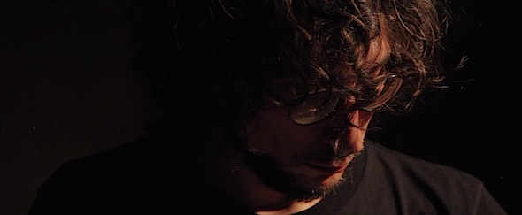

Sound artist and musician who work within soundscape and sound-ecology boundaries since 2009/10. Lami immerses himself in the phenomenon of magnetism with unrestrained curiosity and regularly wrestles surprising insights out of it. In our current era of hyperspecialization, he can truly be called a universal scholar, his qualifications range from photography and visual arts to a PhD in food technology all the way to a wide range of professional experience, including as a UNESCO employee in Ethiopia. All this has sharpened his analytical view, which he has focussed for some time now on the potential of sound. In his performances, he manipulates in real time the sounds that are buried within the metal oxide layers of magnetic tape a million times over and can be teased out time and time again. His research is related with the study of resonant surfaces in the field, degradation processes and the limit/interferences of each device used to record or reproduce a sound.
In 2016, with Enrico Malatesta and Glauco Salvo, he founded MU, an independent association devoted to sound-experiences, acting as a listening platform to develop and bring fresh and smart workshops, listening sessions, gigs and conferences.
Artist in Residence at: Hotel Pupik (Austria, 2015) Khora /Syros Film Festival (Greece, 2015) Forte Marghera /Venice (Italy, 2015) Apache4 /Milan (Italy, 2017) Tempo Reale /Florence (Italy, 2018) GMEA /Albi (France, 2019) Hangar /Barcelona (Spain, 2020) Q-O2 /Bruxelles (Belgium, 2021) EMS /Stockholm (Sweden, 2022)
Since 2009, he played in venues including: Conservatorio B. Maderna (Cesena), DalVerme (Roma), Mu.Vi.Ment.S. Festival 2010 (Itri), Fondazione Giorgio Cini (Venezia), Festival C/off (Faenza), Kernel Festival (Desio), NerosuBianco (Cesena), Tagofest VI (Massa), Florence Live Looping Festival (Firenze), Flussi2011 (Avellino), Spazio Elastico (Bologna), Barbur Gallery (Jerusalem), Rogatka (Tel Aviv), The Zimmer (Tel Aviv), Kreuzberg Pavillon (Berlin), Homework Festival (Bologna), Ravenna Festival (Ravenna), Teatro Fondamenta Nuove (Venezia), KNOT Gallery (Athens), Les Yper Yper (Thessaloniki), The Bee’s Mouth (Brighton), CafeOTO (London), HanaBi (Ravenna), Teatro Moderno (Agliana), O’ (Milan), Störung Festival (Barcelona), Quiet Cue (Berlin), Area Sismica (Forlì), Macao (Milan), Sonnenstube (Lugano), Convento di S.Agostino (Pietrasanta), Apollo Theatre (Hermoupolis), Museo Medioevale (Bologna), Signal Festival (Cagliari), Istituto Francese (Firenze), Standards (Milano), Euphorbia (Bologna), Spektrum (Berlin), StudioAcht (Berlin), Confine Aperto (Ljubljana), CafeOTO Project Room (London), Cafe Kino (Bristol), OOR (Zurich), Klappfon (Basel), NODE Festival (Modena), Transmissions IX Festival (Ravenna), Teatro Palamostre (Udine), Centro Del Carmen (Valencia), MTM Teatro (Milano), Blah Blah (Torino), Santarcangelo Festival (Santarcangelo), Opera Estate Festival (Bassano del Grappa), Forma Festival (Udine), Path Festival (Verona), Spazio Boat (Venezia), RIU project (Rimini), Detritus Festival (Atene), Narkissos Gallery (Bologna), La Digestion Festival (Napoli), CISIM (Ravenna), Cantina Cenci (Tarzo), Auditorium Fausto Melotti (Rovereto), LegnoCanedicoda (Milano), Living Room (Torino), 0riente (Lecce), Innesta (Taranto), Cave12 (Geneve), Futura (Milano), ViaBuonfanti (Pistoia), Periferico Festival (Modena), Spettro (Brescia), IUAV (Venezia), Klang (Roma), A L’ARME! Festival (Berlin), Chiasmo Festival (Taranto), GMEA (Albi – F), Cripta747 (Torino), Tempo Reale (Firenze), Hangar (Barcelona), Angelica Festival (Bologna), Biennale d’Architettura (Venezia), Lugo Contemporanea (Lugo), Soundscreen Film Festival (Ravenna).
